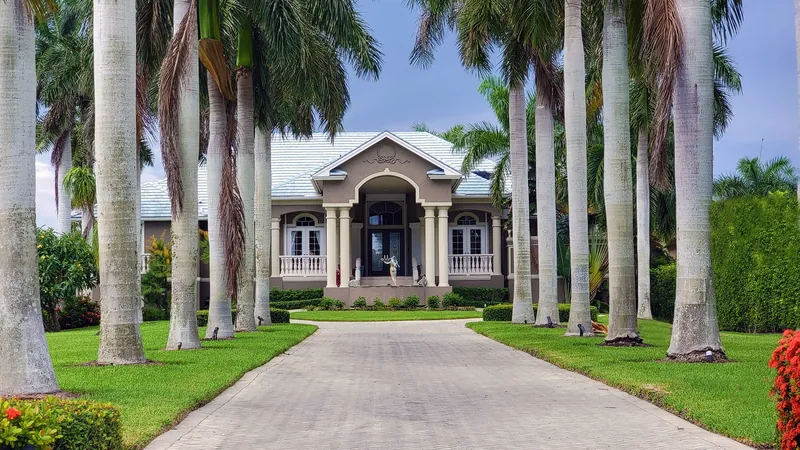

01
Roof cleaning
The surface that must never see a pressure washer. Mold, grime and dirt cleared, roof looking new again, granules left where the manufacturer put them.

Low pressure · the right method
The local soft water cleaning specialists at Blue Fox Landscape & Services will get your property back to looking new again.
What this is
Soft washing uses low-pressure water with a mixture of cleaning solutions to remove molds, mildew, dirt, grime, and more, from the exterior of homes.
It exists because most of what makes a Florida house look dirty is alive. Mold, mildew and algae are not deposits you can blast off — they are growth, and force only removes the top of it. A cleaning solution kills it, which is why a soft wash stays clean far longer than a rinse does, and why it can be done at a pressure that will not touch your siding, your screens or your roof.

What we wash
The method follows the surface. That is the whole discipline, and getting it backwards is how exteriors get damaged.
01
The surface that must never see a pressure washer. Mold, grime and dirt cleared, roof looking new again, granules left where the manufacturer put them.
02
The whole exterior — siding, soffits, trim and eaves — brought back without forcing water behind any of it.
03
The black tiger-striping down the face of a gutter is not dirt and does not rinse off. It is exactly what a soft wash solution is for.
Questions
Soft washing uses low-pressure water with a mixture of cleaning solutions; power washing uses high pressure and no chemistry. Roofs, siding and gutters get soft washed. Driveways, patios and fences get power washed. The method follows the surface, not the preference.
Tell us what is planted near the walls and where the pets go, and the crew will plan around it — pre-wetting, rinsing down and sequencing are all part of doing this properly.
Longer than a rinse, because the growth is killed rather than knocked off. How much longer depends on shade, tree cover and which side of the house you are looking at.
Free, no-obligation estimate
Tell us about the property and we will come back to you. Estimates are free — the only thing that carries a fee is digital design work, and that is credited back if the package is approved.